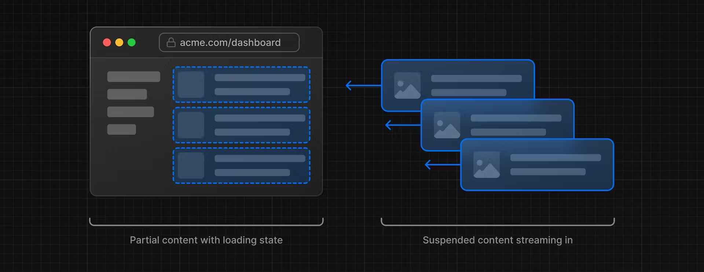
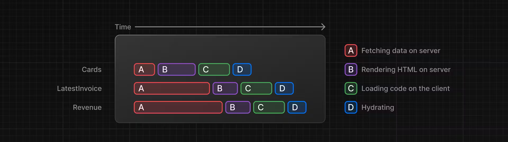
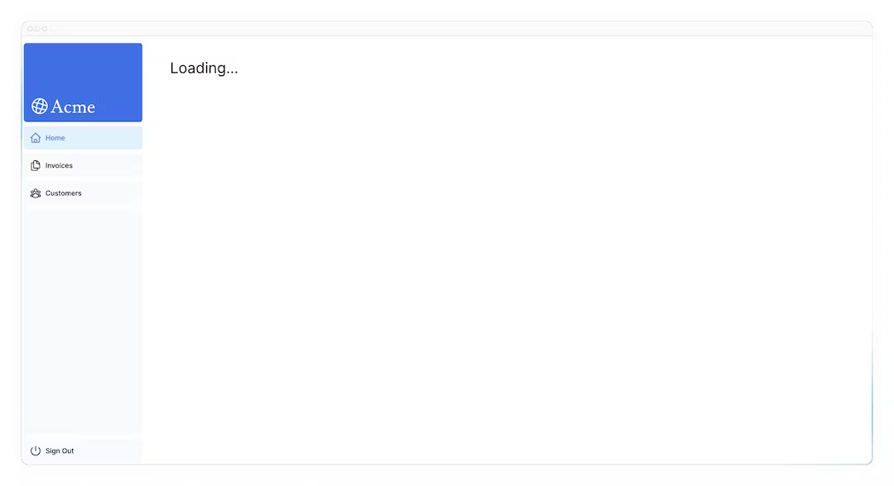
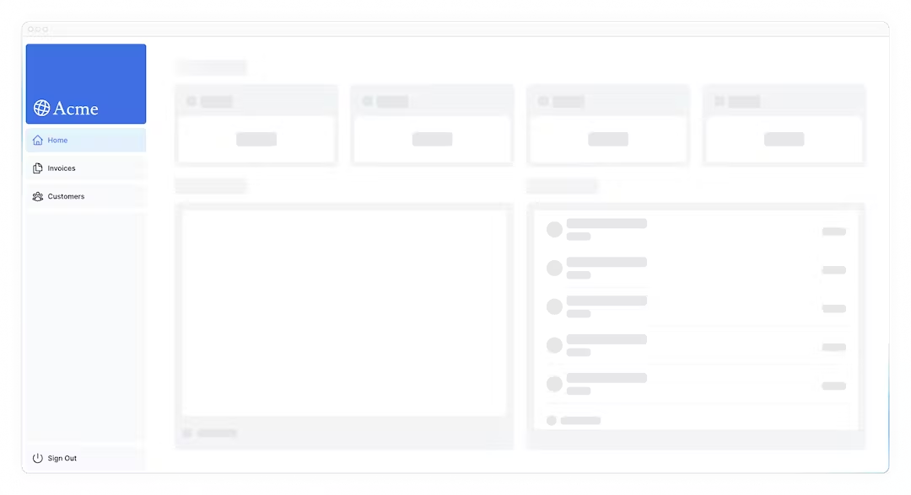
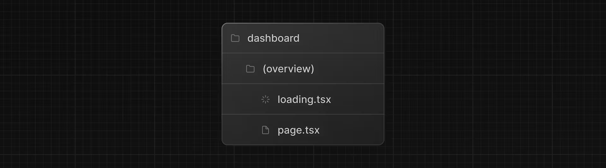
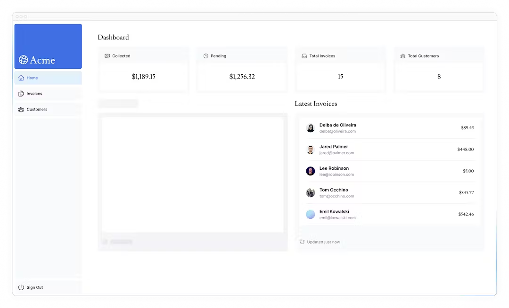

9ストリーミング
前の章では、ダッシュボード・ページを動的にしましたが、データ・フェッチの遅さがアプリケーションのパフォーマンスにどのような影響を与えるかについて説明しました。ここでは、遅いデータリクエストがあったときにユーザーエクスペリエンスを改善する方法を見ていきましょう。
この章では...
この章で取り上げるトピックは以下の通りです。
- ストリーミングとは何か？
- loading.tsxとSuspenseを使ったストリーミングの実装方法。
- ローディング・スケルトンとは何か。
- ルートグループとは何か、どのような場合に使うのか。
- アプリケーションのどこにサスペンス境界を置くか。
ストリーミングとは？
ストリーミングとは、データ転送のテクニックの一つで、経路をより小さな「チャンク」に分割し、準備が整うごとにサーバーからクライアントへ順次ストリーミングしていく方法です。

ストリーミングによって、遅いデータ・リクエストがページ全体をブロックするのを防ぐことができます。これにより、UIがユーザーに表示される前にすべてのデータがロードされるのを待つことなく、ユーザーはページの一部を見て操作することができます。

ストリーミングはReactのコンポーネント・モデルと相性がよく、各コンポーネントはチャンクとみなすことができるからです。
Next.jsでストリーミングを実装するには、2つの方法があります：
- ページレベルで、
loading.tsxファイルを使う。
- 特定のコンポーネントに対して、
<Suspense>を使う方法です。
この方法を見てみましょう。
ここでクイズです
ストリーミングの利点は何ですか？
- チャンクの暗号化によりデータ要求の安全性が向上
- すべてのチャンクは完全に受信されてからレンダリングされる。
- チャンクは並列にレンダリングされ、全体のロード時間が短縮される。
答え
"3. チャンクは並列にレンダリングされ、全体のロード時間が短縮される。"
この方法の利点のひとつは、ページ全体の読み込み時間を大幅に短縮できることだ。
loading.tsxを使ったページ全体のストリーミング
/app/dashboardフォルダに、loading.tsxという新しいファイルを作成します：
| app/dashboard/loading.tsx |
|---|
| export default function Loading() {
return <div>Loading...</div>;
}
|
http://localhost:3000/dashboardをリフレッシュしてください：

ここではいくつかのことが起きています：
1loading.tsxはSuspenseの上に構築された特別なNext.jsファイルで、ページのコンテンツがロードされる間、代替として表示するフォールバックUIを作成することができます。<Sidebar>は静的なので、すぐに表示されます。動的コンテンツがロードされている間、ユーザーは<サイドバー>とインタラクトすることができます。- ユーザはナビゲートする前にページのロードが終了するのを待つ必要はありません（これは中断可能なナビゲーションと呼ばれます）。
おめでとう！ストリーミングの実装が完了しました。しかし、ユーザー体験を向上させるためにもっとできることがある。"Loading..."というテキストの代わりに、ローディングのスケルトンを表示してみましょう。
ローディング・スケルトンの追加
ローディング・スケルトンは、UIの簡易版です。多くのウェブサイトでは、コンテンツがロード中であることをユーザーに示すためのプレースホルダー（またはフォールバック）として使用しています。あなたがloading.tsxに埋め込むすべてのUIは、静的ファイルの一部として埋め込まれ、最初に送信されます。その後、残りの動的コンテンツがサーバーからクライアントにストリーミングされます。
loading.tsxファイル内に、<DashboardSkeleton>と呼ばれる新しいコンポーネントをインポートします：
| app/dashboard/loading.tsx |
|---|
| import DashboardSkeleton from "@/app/ui/skeletons";
export default function Loading() {
return <DashboardSkeleton />;
}
|
その後、http://localhost:3000/dashboardをリフレッシュしてください：

ルートグループでのローディングスケルトンのバグ修正
現在、ローディングスケルトンは請求書と顧客のページにも適用されます。
loading.tsxはファイルシステム上、/invoices/page.tsxや/customers/page.tsxよりも上位にあるため、これらのページにも適用されます。
これはRoute Groupsで変更できます。dashboardフォルダ内に/(overview)という新しいフォルダを作成します。そして、loading.tsxとpage.tsxファイルをそのフォルダ内に移動します：

これで、loading.tsxファイルはダッシュボードの概要ページにのみ適用されます。
ルートグループを使用すると、URLパス構造に影響を与えることなく、ファイルを論理的なグループにまとめることができます。括弧 () を使用して新しいフォルダを作成すると、その名前は URL パスには含まれません。つまり、/dashboard/(overview)/page.tsxは/dashboardになります。
ここでは、loading.tsxがダッシュボードの概要ページにのみ適用されるように、ルートグループを使っています。しかし、ルートグループを使って、アプリケーションをセクションに分けたり（例えば、(マーケティング)ルートと(ショップ)ルート）、大規模なアプリケーションのためにチームごとに分けることもできます。
コンポーネントのストリーミング
ここまでは、ページ全体をストリーミングしています。しかし、React Suspenseを使えば、もっと細かく特定のコンポーネントをストリーミングすることができます。
Susppenseを使うと、何らかの条件が満たされるまで（例えばデータが読み込まれるまで）、アプリケーションの一部のレンダリングを延期できます。動的コンポーネントをSuspenseでラップできます。そして、動的コンポーネントがロードされる間に表示するフォールバックコンポーネントを渡します。
遅いデータリクエストであるfetchRevenue()を覚えているでしょうか？これはページ全体を遅くしているリクエストです。ページをブロックする代わりに、Susppenseを使ってこのコンポーネントだけをストリーミングし、ページの残りのUIをすぐに表示することができます。
そのためには、データの取得をコンポーネントに移す必要があります：
fetchRevenue()のすべてのインスタンスとそのデータを/dashboard/(overview)/page.tsxから削除します：
| /app/dashboard/(overview)/page.tsx |
|---|
| import { Card } from '@/app/ui/dashboard/cards';
import RevenueChart from '@/app/ui/dashboard/revenue-chart';
import LatestInvoices from '@/app/ui/dashboard/latest-invoices';
import { lusitana } from '@/app/ui/fonts';
import { fetchLatestInvoices, fetchCardData } from '@/app/lib/data'; // remove fetchRevenue
export default async function Page() {
const revenue = await fetchRevenue // delete this line
const latestInvoices = await fetchLatestInvoices();
const {
numberOfInvoices,
numberOfCustomers,
totalPaidInvoices,
totalPendingInvoices,
} = await fetchCardData();
return (
// ...
);
}
|
次に、Reactから<Suspense>をインポートし、<RevenueChart />で囲みます。<RevenueChartSkeleton> というフォールバック・コンポーネントを渡すことができます。
| /app/dashboard/(overview)/page.tsx |
|---|
| import { Card } from "@/app/ui/dashboard/cards";
import RevenueChart from "@/app/ui/dashboard/revenue-chart";
import LatestInvoices from "@/app/ui/dashboard/latest-invoices";
import { lusitana } from "@/app/ui/fonts";
import { fetchLatestInvoices, fetchCardData } from "@/app/lib/data";
import { Suspense } from "react";
import { RevenueChartSkeleton } from "@/app/ui/skeletons";
export default async function Page() {
const latestInvoices = await fetchLatestInvoices();
const {
numberOfInvoices,
numberOfCustomers,
totalPaidInvoices,
totalPendingInvoices,
} = await fetchCardData();
return (
<main>
<h1 className={`${lusitana.className} mb-4 text-xl md:text-2xl`}>
Dashboard
</h1>
<div className="grid gap-6 sm:grid-cols-2 lg:grid-cols-4">
<Card
title="Collected"
value={totalPaidInvoices}
type="collected"
/>
<Card
title="Pending"
value={totalPendingInvoices}
type="pending"
/>
<Card
title="Total Invoices"
value={numberOfInvoices}
type="invoices"
/>
<Card
title="Total Customers"
value={numberOfCustomers}
type="customers"
/>
</div>
<div className="mt-6 grid grid-cols-1 gap-6 md:grid-cols-4 lg:grid-cols-8">
<Suspense fallback={<RevenueChartSkeleton />}>
<RevenueChart />
</Suspense>
<LatestInvoices latestInvoices={latestInvoices} />
</div>
</main>
);
}
|
最後に、<RevenueChart>コンポーネントを更新して、それ自身のデータを取得し、渡されたpropを削除します：
| /app/ui/dashboard/revenue-chart.tsx |
|---|
| import { generateYAxis } from '@/app/lib/utils';
import { CalendarIcon } from '@heroicons/react/24/outline';
import { lusitana } from '@/app/ui/fonts';
import { fetchRevenue } from '@/app/lib/data';
// ...
export default async function RevenueChart() { // Make component async, remove the props
const revenue = await fetchRevenue(); // Fetch data inside the component
const chartHeight = 350;
const { yAxisLabels, topLabel } = generateYAxis(revenue);
if (!revenue || revenue.length === 0) {
return <p className="mt-4 text-gray-400">No data available.</p>;
}
return (
// ...
);
}
|
ページを更新すると、ダッシュボードの情報がすぐに表示され、<RevenueChart>についてはフォールバック・スケルトンが表示されます：

演習: ストリーミング <LatestInvoices>
次はあなたの番です！<LatestInvoices>コンポーネントをストリーミングして、今学んだことを練習してみましょう。
fetchLatestInvoices()をページから<LatestInvoices>コンポーネントに移動します。<LatestInvoicesSkeleton>というフォールバックを持つ<Suspense>境界でコンポーネントを包みます。
準備ができたら、トグルを展開してソリューションコードを見てください：
答え
| app/dashboard/(overview)/page.tsx |
|---|
| import { Card } from '@/app/ui/dashboard/cards';
import RevenueChart from '@/app/ui/dashboard/revenue-chart';
import LatestInvoices from '@/app/ui/dashboard/latest-invoices';
import { lusitana } from '@/app/ui/fonts';
import { fetchCardData } from '@/app/lib/data'; // Remove fetchLatestInvoices
import { Suspense } from 'react';
import {
RevenueChartSkeleton,
LatestInvoicesSkeleton,
} from '@/app/ui/skeletons';
export default async function Page() {
// Remove `const latestInvoices = await fetchLatestInvoices()`
const {
numberOfInvoices,
numberOfCustomers,
totalPaidInvoices,
totalPendingInvoices,
} = await fetchCardData();
return (
<main>
<h1 className={`${lusitana.className} mb-4 text-xl md:text-2xl`}>
Dashboard
</h1>
<div className="grid gap-6 sm:grid-cols-2 lg:grid-cols-4">
<Card title="Collected" value={totalPaidInvoices} type="collected" />
<Card title="Pending" value={totalPendingInvoices} type="pending" />
<Card title="Total Invoices" value={numberOfInvoices} type="invoices" />
<Card
title="Total Customers"
value={numberOfCustomers}
type="customers"
/>
</div>
<div className="mt-6 grid grid-cols-1 gap-6 md:grid-cols-4 lg:grid-cols-8">
<Suspense fallback={<RevenueChartSkeleton />}>
<RevenueChart />
</Suspense>
<Suspense fallback={<LatestInvoicesSkeleton />}>
<LatestInvoices />
</Suspense>
</div>
</main>
);
}
|
<LatestInvoices>コンポーネントで、propsを削除することを忘れないでください：
| app/ui/dashboard/latest-invoices.tsx |
|---|
| import { ArrowPathIcon } from '@heroicons/react/24/outline';
import clsx from 'clsx';
import Image from 'next/image';
import { lusitana } from '@/app/ui/fonts';
import { fetchLatestInvoices } from '@/app/lib/data';
export default async function LatestInvoices() { // Remove props
const latestInvoices = await fetchLatestInvoices();
return (
// ...
);
}
|
コンポーネントのグループ化
素晴らしい！もう少しです。<Card>コンポーネントをサスペンスでラップする必要があります。個々のカードごとにデータを取得することもできますが、この場合、カードが読み込まれるときにpopping effect(急に要素が現れる現象)が発生する可能性があります。
では、この問題にどう対処しましょう？
より千鳥効果(スタッガード エフェクト: 随時要素が表示される効果)を出すには、ラッパー・コンポーネントを使ってカードをグループ化します。つまり、静的な<Sidebar/>が最初に表示され、その後にカードなどが表示されます。
page.tsxファイルで下記を行います：
<Card>コンポーネントを削除します。fetchCardData()関数を削除します。<CardWrapper />という新しいラッパー・コンポーネントをインポートします。<CardsSkeleton />という新しいスケルトン・コンポーネントをインポートします。<CardWrapper />を Suspense でラップします。
| app/dashboard/page.tsx |
|---|
| import CardWrapper from "@/app/ui/dashboard/cards";
// ...
import {
RevenueChartSkeleton,
LatestInvoicesSkeleton,
CardsSkeleton,
} from "@/app/ui/skeletons";
export default async function Page() {
return (
<main>
<h1 className={`${lusitana.className} mb-4 text-xl md:text-2xl`}>
Dashboard
</h1>
<div className="grid gap-6 sm:grid-cols-2 lg:grid-cols-4">
<Suspense fallback={<CardsSkeleton />}>
<CardWrapper />
</Suspense>
</div>
// ...
</main>
);
}
|
次に、/app/ui/dashboard/cards.tsxに移動し、fetchCardData()関数をインポートして、<CardWrapper/>コンポーネント内で呼び出してください。このコンポーネントで必要なコードがあれば、必ずコメントを外してください。
| /app/ui/dashboard/cards.tsx |
|---|
| // ...
import { fetchCardData } from "@/app/lib/data";
// ...
export default async function CardWrapper() {
const {
numberOfInvoices,
numberOfCustomers,
totalPaidInvoices,
totalPendingInvoices,
} = await fetchCardData();
return (
<>
<Card
title="Collected"
value={totalPaidInvoices}
type="collected"
/>
<Card title="Pending" value={totalPendingInvoices} type="pending" />
<Card
title="Total Invoices"
value={numberOfInvoices}
type="invoices"
/>
<Card
title="Total Customers"
value={numberOfCustomers}
type="customers"
/>
</>
);
}
|
ページを更新すると、すべてのカードが同時に読み込まれるのが見えるはずだ。複数のコンポーネントを同時にロードしたいときに、このパターンを使うことができます。
Suspense の境界線をどこに置くかを決める
Suspense の境界線をどこに置くかは、いくつかの事柄によって決まります：
- ユーザーにどのようにページを体験してもらいたいか。
- どのコンテンツを優先するか。
- コンポーネントがデータ取得に依存している場合。
ダッシュボードのページを見て、もっと違ったやり方はないでしょうか？
心配しないでください。正解はありません。
loading.tsxで行ったように、ページ全体をストリームすることもできますが......コンポーネントの1つに遅いデータフェッチがある場合、ロード時間が長くなるかもしれません。- 各コンポーネントを毎にストリーミングすることもできますが...その場合、UIが準備完了になると画面に飛び出す可能性があります。
- ページセクションをストリーミングすることで、時差効果を作り出すこともできる。ただし、ラッパー・コンポーネントを作成する必要がある。
サスペンスの境界をどこに置くかは、アプリケーションによって異なります。一般的には、データの取得を必要なコンポーネントに移し、そのコンポーネントをサスペンスでラップするのが良い方法です。しかし、アプリケーションに必要であれば、セクションやページ全体をストリーミングしても問題はありません。
Suspenseは、より楽しいユーザー体験を生み出すための強力なAPIです。
ここでクイズです
一般的に、サスペンデッドとデータ・フェッチで作業する場合、どのようなことがグッドプラクティスとされていますか？
- データフェッチを親コンポーネントに移動する
- データ・フェッチにサスペンスを使わない
- データ・フェッチを必要なコンポーネントに移す。
- エラー境界にのみサスペンスを使用する
答え
"3. データ・フェッチを必要なコンポーネントに移す。"
データ取得を必要なコンポーネントに移すことで、よりきめ細かいSuspension境界を作ることができます。これにより、特定のコンポーネントをストリーミングし、UIがブロックされるのを防ぐことができます。
今後の展望
ストリーミングとサーバー・コンポーネントは、データのフェッチとロードの状態を処理する新しい方法を提供してくれます。
次の章では、ストリーミングを念頭に置いて構築された、Next.jsの新しいレンダリングモデルである部分プリレンダリングについて学びます。
第9章終了です！
サスペンデッドでコンポーネントをストリーミングし、スケルトンをロードする方法を学びました。
第10章 部分プリレンダリング（オプショナル）
ストリーミングで構築された新しい実験的レンダリングモデル、パーシャル・プリレンダリングをいち早く紹介。